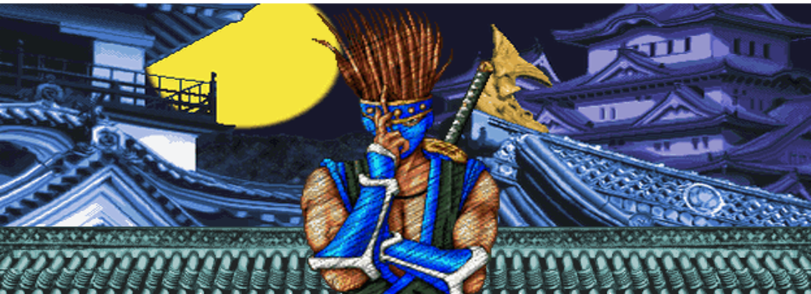

Saizo Tobikageno
History
Saizo Tobikageno, a ninja driven by the desire for vengeance, pursues justice for the annihilation of his clan.
Gameplay
Saizo shines as the top zoning character, with his anti-air sword covering a large area, and his kunai passing through other projectiles. His speed, short dashes, and strong jump attacks allow seamless transitions between zoning and offense, enhancing both aspects of his gameplay.
| Commands | |
|---|---|
| Rasen Kyaku |
 + + |
| Ryuuei Kyaku |
 ++ ++ |
| Specials | |
| Hiryuu |
 + + |
| Yashagami |
 + + |
| Engetsuzan |
 + + |
| Supers | |
| Musou Shinra |
+ |
| Musou Tenha |
+ |
| Senku Ensatsujin |
+ |
Table of contents
- Offense
- Projectiles
- Anti-air
- Breaker
- Stand HK
- Super usage
- Chip damage
- Pressings
- Throw Option Select
- Fuzzy
Offense
his forward j.HP has strong priority over normals and most specials.
Dashing grounded attacks give him the ability to maintain pressure, even from a distance.
safe blockstring:
cr.LP x 2 > st.LK > slide > bomb
close. st.HP
close st.HP hits low, you can use it to trick your opponent while he’s standing.
example: (corner) j.HP > st.LP x 2 > st.HP > bomb > Super
Projectiles
Use 236 LP (kunai) for fast, potent chipping and distance control.
It pierces through opponent projectiles (except Saizo).
236 HP (Bombs) are slower, but they recover much faster than other projectiles.
They can be used more frequently to keep opponents pressured.
j.HP and neutral j.HP are both effective air-to-air attacks.
Anti-air
623P swords
If it hits a jumping opponent, it can be followed by a super.
close st.HK
can be canceled into super flames or 623P swords
214 LP
a reliable anti-air because of its invincibility frames.
Breaker
214 LP is your breaker move. It has an invincible startup and leads to Hair Super (236236 K). Use with caution, you're at a disadvantage even on hit unless you confirm with a super.
Stand HK
Saizo's strongest normal. It can be used for both defense and offense. Additionally, there are far and close versions of the standing HK. Understanding their triggering range is crucial, as the long-distance one can leave you vulnerable.
a) close HK on offense
On block and hit, close st.HK is positive, you can try to :
- Continue your pressure (ex: st.HK > cr.LK)
- Or, wait/delay your following attack to bait a backdash/jump/reversal
b) close HK on defense
It’s a reliable anti-air, as it comes fast and has a large hitbox. it leads to significant damage due to its special/super cancelable properties. Use 6HK for easier sword conversion. HK > 623HP becomes 6HK > 23HP.
Super usage
Musou Shinra: Long-range anti-air super, and extends juggle combos seamlessly
Musou Tenha : Summons a pillar of flames. The Light version is fixed directly in front of Saizo, while the Heavy version tracks the opponent
Senku Ensatsujin : Must-have super. Saizo dashes and executes an auto combo. Extremely fast startup; punishes most moves in the game. Cancelable out of light hair.
Chip damage
Chip with projectiles, swords, or hair (Yashagami).
Kunai (236LP) does more chip than bomb (236HP).
Heavy Hair (214HP) and Sword HP (623HP) deal the most chip damage among all of Saizo's specials and supers.

Pressings
In all matchups, you can easily pressure your opponent with slide (LK+HK) into bomb

throw/st.HK OS
Coupling Dash Guard with Back Throw (back+HP+HK) makes for an aggressive throw/anti-air option select.
throw OS (4HP+HK) :
- if your opponent is trying to jump : back+HK (anti-air)
- if your opponent stays at throw-range : back+HP (throw)

Fuzzy
- j.HP > j.HK
- j.HK > j.HK
Table of contents
Meterless combos

- cr.LK x 2 > st.LP > 623 HP
- cr.LK x 2 > st.HP > 623 HP
- cr.LK x 2 > st.HK > 623 HP
- cr.LK x 2 > st.HP > bomb
- cr.LP x 3 > st.LK > slide
- j.HP > st.HP > 623 HP
Metered combos

- cr.LK x 2 > st.HP > 623 HP > Super 214214P
- cr.LK x 2 > st.HK > 623 HP > Super 214214P
- cr.LP x 3 > st.LK > 214 LP > Super 236236K
Anti-air

- 623HP anti-air > Super (214214P)
- close st.HK anti-air > 623HP > Super (214214P)
Air-to-air

- j.HK > Super
- j.HP > Super
 |
 |
 |
 |
 |
 |
 |
 |
 |
Saizo
Rasen Kyaku
Overhead, negative on hit and block with a long recovery.
Leaves ample time for punishment.
Saizo rarely resorts to this move unless finishing off his opponent
Ryuuei Kyaku
Slide into bomb is safe midscreen if your no meter otherwise always punish with super (236236K).
On corner punish with cr.LK
Yashagami
Yashagami HP knocks down opponents, while Yashagami LP serves as a reversal and anti-air.
This move must be canceled into a super due to its negative frames on hit and block.
Be cautious on block; Saizo still has a few frames to execute a super,
causing hesitation in your usual punishment.
st.HP
Close st.HP hits low, while the far version has significant recovery, making it punishable even on hit.
Hengetsuzan
Run > st.HK to punish
Pielle
Saber Bash
Despite its animation, this move isn't an overhead.
Punish with cr.LK or Super (236236K) and on whiff with 214LP
Flying Peach Bomber
This one is an overhead, but if done close to you, it will whiff, and he'll pass behind you.
When used in a blockstring, there's always a gap, no matter which normal move it was canceled from.
Punish on whiff with 214LP
Bonjour Shot
A projectile with a very slow recovery.
You can punish it from your own projectile (Kunai - 236LP)
At close range, punish on block or hit with cr.LK or cr.HP. Mid range with super (236236K).

Robin Liner
An anti-air special with slow recovery and no reversal properties...
On hit, LP version keeps you standing for a punish, while HP version knocks you down.
Monsieur Crash
A three-hit move, easily punishable. However, Pielle can delay each hit to counter your punish attempt.
Merci Un Deux Trois
An aerial dive that can deceive your anti-air or jump.
When you block all 3 hits, Pielle passes behind you. Punish with cr.LK
Super Rose
A super that crosses the entire screen with a wide hitbox, useful for countering jump attempts.
Whiff punish at super flash with 214LP.
Thunder Croiser
On block, dash > cr.LP
Rila
Dynamite Kick
punish with super (236236K).
Killer Snake
Killer snake isn't an overhead, so block low.
The HK version passes through projectiles and sets up her super.
It's negative on block, but she still has frames to input her invulnerable startup Super.
On block, always react with cr.LP, it will punish if she does nothing.
In case she use Shine Beast Super, just block. if it's Bloody Fang, st.HK will hit her startup frames.

Spinning Claw
punish on block with Super (236236K)
Quick Scratch LP
Very fast, can catch you off guard at mid and close range.
You can punish it on whiff, block and hit with super (236236K)

Quick Scratch HP
The same applies to the LP version unless it is negative on block and results in a knockdown.
Punish with st.HP.
Wild Saver
Her reversal and break special. Punish LK ver. with st.HP. HK ver. has more recovery,
if you're close enough, you'll have time to punish her with a neutral jump
Shine Beast
On block, she ends up on the other side (at mid and close range).
With practice, you can time your jump correctly to punish her
Bloody Fang
This super is not overhead despite the jump animation. punish with dash > st.HK
cr.HP
Dao-long
Kouryuu Ga
dao-long's fireball, punsish at point blank with cr.LK.
use your super (214214K) to pass through fireball.
break with super: cr.LP x 2 > cr.LK x Kouryuu Ga
Senkyuu Tai
his invul. reversal anti-air, punish on block with st.HP and on whiff with run > st.HP
Riyuu Seishou
A combo ender and pressing tool that he usually follow with Super or projectile.
Punish with super (236236K) in midrange, and if canceled in the corner.

Senpuure Kyaku
slow anti-air command. If you're close enough, you can punish him on block with crouching Light Kick.
Shoutenchuu
Safe short jump Overhead, whiff punish with 214K
Houshin Renpa
Fireball super, can be used at mid range to punish your own projectiles
Shin Kyoku Ranbu
not overhead despide to jump animation. punish on block with dash > st.HP
Condor
Tomahawk Jack
Tomahawk is used as an anti-air or to defend against projectiles and build meter.
This move is easily punishable on block: up close, use st.HP and
from any range, punish with super (236236K), which also punishes on whiff.
Gran Buffalo Horn
Passes through projectiles and helps close the distance against grounded opponents.
Punishable on hit and whiff with cr.HK or cr.HP
Sky Bridge
Punish with st.HP at close range.
Atlas Rock Buster
Has invul. startup, useful for reversals, anti-airs, or ending combos.
Can be tricky to punish on block if not close enough due to pushback and quick recovery.
The key is to react after the first blocked hit; you can throw or backdash then punish with dash > cr.LP
cr.HK
punish with cr.LK
cr.HP
Sho
Onigawara
An overhead cancelable from all of his close normals, making it a strong move.
Use your super (236236K) to punish on block or during its startup frames.
Break with 214LP when followed by his hop-kick.

Tobihizageri
A pressing tool, safe on block, but depending on the range,
Sho might end up within your throw range or leave an opening in the knee animation where you can react with
214LP.
Sashikomi Kick
This divekick is challenging to handle because it can be executed from any jump height.
Additionally, it is super-cancelable on hit, block, or whiff.
At high height and when Sho has no meter, you can reliably counter it with jump back HP.
It is also breakable with 214LP, backdash, or throw (though throw can be countered by his reversal)
Rekkou Ha
A basic fireball that can be punished when blocked at point-blank range.
Sho's Super 214214K goes through projectiles (from backdash range).
Ranki Ryuu Geri
Ranki Ryuu Geri is tricky as it can be followed by air super (Geki Rekkou Ha).
However, it's still minus on block. at super flash, react with ...
Geki Rekkou Ha
Break with a backdash if used at a high height. For example: divekick x super or fuzzy j.HK x super.
Maherl
Abdomen Step
This short step is punishable with cr.LK if he is very close to you.
It's safe if it was canceled by st.LK (st.LK creates a slight pushback).
However, you can always break or whiff punish with 214LP
Slash Sword
This attack can reach you from very far away.
Punish from all ranges with Super (236236K)
Punish Sword
Travels a shorter distance than Slash Words.
Punish from all ranges with Super (236236K)
Fire Breath
Punish LP version on block with j.HK and on whiff with super (236236K).
For HP version, you can interrupt with any normals immediately after blocking the first or second hit.
Balloon Bomb
Overhead, whiff punish with st.HP/cr.HP or 214HK. on block, punish with run > st.HP
Cadabra Bomber
A Super that can go through projectiles up close. Punish with Super (236236K) or dash > st.HK
Shiva Dance
A Super with invincible startup that is safe on block. Punishable up close after blocking first hit with backdash then hair (214HP)
Tia
Soul Spike
Ground Soul Spike LK/HK are not overhead, block low.
Soul Spike LK has pushback and minimal recovery, you can punish it with Super (236236K).
Soul Spike HK has no pushback, making it easier to punish.
On hit, you can break both versions with a throw, backdash, or Super.
Before attempting a block punish, check her super meter first.
Tia can counter with Burning Revolver, A throw is a guaranteed punish if she uses Soul Spike HK.

Mirage Spear Kick
Punish on block or hit with super (236236K)
Rising upper
Rising Upper LP is an anti-air reversal with quick recovery, making it difficult to punish on whiff.
It's invulnerability on startup allows her to pass through projectiles.
When blocked at close range, punish with st.HK or super (236236K)
Rapid Gale
Her Fireball isn't ideal for zoning and has a slightly slow recovery. She mostly uses it for okizeme or
pressure. at mid range, while dashing, you can react and jump to punish her.
Heel Break
After the first hit of the 2-hit sequence,
punish or break with a throw, 214LP, especially since the last hit is an overhead.
Rapid Charge
Her strong super punishes projectiles.
When she switches sides mid-air on block, quickly turn your character to punish.
Burning Revolver
dash > st.HK to punish.
Cutlass Flasher
Overhead super, switches sides on block.
Alsion III
Horus Shade
An overhead with a slow startup, making it easily reactable.
Punish on block or whiff with cr.LP, cr.LK or Super (236236K)
Death Shred
This one is also an overhead with a slow startup but has a larger pushback.
It's a two-hitter when the opponent is standing.
Second hit is overhead.
If crouched, whiff punish with cr.LK; standing, interrupt before 2nd hit with cr.LK.
Poison Fog
Close-range projectile for chip damage or pressure on your wakeup.
Punish with your reversal super (236236K)
Deadly Claw
A teleport ending with an aerial strike, usable on the ground and in the air to counter your anti-air attempts.
When executed close to you, the LK version lands in the same spot, while the HK version lands behind you.
Punish at close range with Super (236236P) and on whiff with st.HK
Dash Knee
A special dash attack that must be executed at the right spacing to be safe.
Punish on block or hit with cr.LK
Anubis Hug
Super projectile with invul. startup. Punish at close range with cr.LK
Pharaoh Dance
Super projectile with invul. startup. If you block it, he retreats very far.
Punish with flames Super (214214HP).